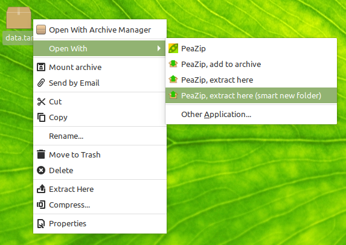

|
Linux archive
manager,
Open Source WinRar WinZip alternative app
What is PeaZip for Linux
PeaZip is an
Open Source (LGPLv3) cross platform archive manager
software, providing strong file encryption
and
compression functions, which open and extract
over 200 archive types including mainstream formats like 7Z / XZ / TXZ, ACE (*), BZ2
/ TBZ, Brotli BR,
GZ / TGZ, ISO, RAR,
TAR, WIM, ZIP,
ZIPX, ZPAQ, Zstandard
ZST and more.
Open Source alternative to WinRar, WinZip and similar propietary
utilities
on
GNU/Linux systems, PeaZip provides high
compression ratio (compress to
7Z, ARC, PAQ formats), supports
encryption / decryption of
several
archive types, supporting multiple
encryption standards (AES, Serpent, Twofish, Blowfish),
optionally open and extract
proprietary formats
(unace, unrar),
provides a full featured file
manager with same look and feel on different desktop environments
(such as Gnome, Cinnamon, Mate, KDE, XFCE), secure delete function
(permanent, non
recoverable data erasure), compute file hash and checksum to find
duplicate content and verify
data integrity, split and join files,
and export task defined in the GUI as
command line scripts.
(*) Extraction of ACE archives requires separate unace plugin
(closed source) available on PeaZip
add-ons page.
RAR files extraction (including
new RAR5 archives) is natively supported through 7z / p7zip Open
Source unrar implementation
Compression to ACE and RAR archives is not supported due the closed
nature
of the formats, and to use alternative Free Software archive formats is
actively recommended.
PeaZip on Wayland
In PeaZip Qt5 does not starts on Wayland,
you need to start PeaZip using QT_QPA_PLATFORM=xcb peazip

PeaZip running on Linux,
light theme, see dark
mode screenshot here
PeaZip for LINUX
X86_64 (AMD64) download notes
See complete change
log and release notes for list of updates and new features of
PeaZip for Linux.
PeaZip
x86_64 (amd64) is a native build for Linux
x86 64 bit and does not
require ia-32 libraries to be installed in order to work, but please
note some 32 bit-only backend binaries may still require ia-32 libs or
may have other specific dependencies, see optional formats dependencies
list.
PeaZip is fully modular, so each backend can be removed without
problem, to be replaced with i.e. a recompiled binary, or a newer
version - until the same syntax is honored.
32
bit packages
found on
the GNU/Linux x86 download page
can
be
installed on x86_64 systems if ia-32 libs are present.
Alternative
downloads for Linux
- build from sources
- compile PeaZip
source
package (LGPLv3, written for Lazarus/FPC) available both as plain ZIP
archive and as Git
repository
- build
DEB, RPM, and other types of packages following examples in "PeaZip
packages examples" package
PeaZip archive manager
for Linux
pre-built packages are targeted to a generic Linux machine, and are not
built for a specific distribution or version.
So, it is preferable building from sources or, whenever it is possible,
it is
recommended to install a distribution / version specific package from
the official repositories of your Linux distribution rather than the
generic binary packages here provided on PeaZip domain.
If a distribution / version specific build
of PeaZip is not available
for your Linux system, it is a
very welcome help to PeaZip project if
you request to add it, contacting the maintainers of your repositories.
|
PeaZip
for Linux installation instructions
Pre-built PeaZip
for Linux packages
PeaZip Portable package (TAR.GZ
format) is built to be as self-contained as possbile and can be
used on any distribution, regardless the software package manager, it
can be simply extracted and launched
starting peazip executable - starting "peazip" binary in console
provides
more feedback in case of problems running the application.
DEB packages are supported by Debian, Ubuntu, Mint, and similar
distributions.
RPM packages are for Fedora, CentOS, Suse and similar distributions.
Due RPM dependencies checking, the base package does not contain some
of the backend executable that can raise incompatibilities with some
systems, which can be installed separately from Additional Formats Plugin
for Linux.
Flatpak packages for x86_64 and aarch64 are kindly made available and
maintained by FlatHub, information about packages, contributors, and
updates of the Flatpaks are available on FlatHub's
GitHub.

|
Structure of PeaZip for Linux packages:
The minimum common structure of
installable package for PeaZip needs to contain:
/usr/lib/peazip/
/usr/lib/peazip/peazip
main application's binary
/usr/lib/peazip/pea binary, contains routines for PEA format,
encryption, hashing etc
/usr/lib/peazip/res
directory, contain application's resources
/usr/lib/peazip/res/bin
directory contains binary,
architecture-dependent resources (binaries of p7zip, brotli, paq,
zstandatd, etc)
/usr/lib/peazip/res/share shortcut points to /usr/share/peazip directory,
containing non architecture-dependent resources (texts, graphics)
$XDG_CONFIG_HOME/peazip
(if OpenDesktop configuration folder variable is not set it is used
$HOME/.config/peazip) directory containing user-specific configuration
files
PeaZip Portable packages contains all needed files into application's
directory, here called (peazip),
which ca be saved anywhere the user prefers.
Portable packages needs (peazip)/res/portable, an empty file to tell
the app to run as Portable version.
(peazip)/res/bin
contains architecture-dependent binary files.
res/share shortcut which in installable versions points to
non-binary resources in /usr/share/peazip is replaced in Portable
packages by an actual directory named (peazip)/res/share
which contains
the non-architecture dependant content.
Being largely independent from underlying system, it can be used as is
on different OS, unless the package maintainer whishes to add or remove
OS specific features (i.e. reg scripts on Windows machines).
Portable versions saves user configuration in (peazip)/res/conf
directory.
|

|
Supported widget
sets
GTK2 packages
may require to
install some components of gtk/gdk libraries, as i.e. libgdk_pixbuf,
or libgdk-x11-2.0.so.0 (missing in out-of-the box recent Debian
distributions), see full list of dependencies
for running GTK2 packages.
GTK3 widget set is
currently in alpha support in Lazarus/FPC. While PeaZip for GTK3 can be
successfully compiled, built, and it will successfully run, there are
currently many issues with graphic and fonts which needs be addressed
by the IDE before this package can be considered ready to be
released for general usage - anyway it is possible for anyone to
successfully compile PeaZip from sources for GTK3 widget set.
Qt5 packages provides
libQt5Pas.so.1.2.6 which is
required to run the Qt version of PeaZip. The binary, or equivalent to
libQt5Pas.so.1, must be installed in /usr/local/lib or equivalent
directory, such as /usr/lib. You can get up to date libQt5Pas.so using
distribution-specific tools, i.e. apt-get install package:architecture,
or copying the file manually and running ldconfig. See full list of dependencies
for running Qt packages.
Compile PeaZip for
Linux from sources
To compile PeaZip targeting other widget sets please read Sources page.
Integrate PeaZip
on Linux desktop environments
freedesktop_integration folder, inside PeaZip
archive manager directory (peazip)/res/share/batch, provides sample
scripts and .desktop files to
manually customize integration (file associations,
compression/archiving and
extraction context menu entries, program's icons) of both Portable and
installable packages on Linux platform, targeting various Desktop
Environments such as Gnome and derivates (Cinnamon, Mate), KDE, XFCE.

Example of PeaZip context
menu integration on Linux
Regardless the package chosen, and regardless the widget set PeaZip is
compiled for, the application is meant to be desktop neutral,
and run with same look & feel on on different desktop environments,
being currently tested on Gnome, Cinnamon, Mate, KDE, and XFCE.
An utter alternative (which can also be used for 7-Zip) can be running
one of PeaZip Windows packages through Wine
- as for other Windows file compression utilities like Winrar or
WinZip, but with the advantage of replacing proprietary software with
an Open Source alternative app.
Synopsis: Download page
of PeaZip for Linux x86_64 / amd64. Cross platform Free Software
archive manager application. Open Source WinRar WinZip alternative for
Linux systems. Desktop neutral archive manager. Download PeaZip DEB, flatpak, RPM,
portable packages. GTK and Qt
PeaZip builds.
Topics: PeaZip archive
manager for Linux x86_64 deb, flatpak, and rpm packages download
PeaZip > Downloads
> Download PeaZip archive
manager for Linux x86_64
|


 DEB Qt5
DEB Qt5